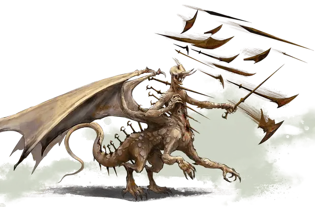

Рак Тулкеш
Rak Tulkhesh
Огромное Исчадие, нейтрально-злое, именной НИП

Класс Доспеха 23 (природный доспех, 25 против дальнобойных атак)
Хиты 478 (33к12 + 264)
Скорость 40 футов, летая 80 футов, лазая 40 футов
| мод | спас | ||
|---|---|---|---|
| СИЛ | 29 | +9 | +17 |
| ЛОВ | 19 | +4 | +4 |
| ТЕЛ | 27 | +8 | +16 |
| мод | спас | ||
|---|---|---|---|
| ИНТ | 21 | +5 | +5 |
| МДР | 22 | +6 | +14 |
| ХАР | 26 | +8 | +16 |
Навыки Атлетика +17, Восприятие +14, Запугивание +16
Сопротивление урону огонь, холод, электричество
Иммунитет к урону яд; дробящий, колющий, рубящий от немагических атак
Иммунитет к состояниям отравление, паралич, очарование, испуг, ошеломление, истощение
Чувства истинное зрение 120 футов, пассивное Восприятие 24
Языки Все, Телепатия 120 фт.
Опасность 28 (120000 опыта)
Бонус мастерства +8
Особенности
Смертельные критические попадания. Для Рак Тулкеша критическими считаются попадания «19» и «20». Рак Тулкеш бросает кости урона трижды, а не дважды.
Врожденное колдовство. Базовой характеристикой РакТулкеша является Харизма (Сл спасброска от заклинания 24). Рак Тулкеш может накладывать следующие заклинания без затрат материальных компонентов:
• Неограниченно: обнаружение мыслей [detect thoughts], рассеивание магии [dispel magic], духовные стражи [spirit guardians]
• 1/день каждое: изгоняющая кара [banishing smite], ослепляющая кара [blinding smite], оглушающая кара [staggering smite]
Легендарное сопротивление (3/день). Если Рак Тулкеш проваливает спасбросок, он может вместо этого сделать спасбросок успешным.
Сопротивление магии. Рак Тулкеш совершает с преимуществом спасброски от заклинаний и прочих магических эффектов.
Вихрь оружия. Магическая аура из оружия окружает Рак Тулкеша в радиусе 10 футов. Любое существо, начинающее свой ход в этой ауре получает 14 (4к6) урона силовым полем.
Действия
Мультиатака. Рак Тулкеш совершает 4 атаки оружием.
Создание рукопашного оружия. Рукопашная атака оружием: +17 к попаданию, досягаемость 10 футов, одна цель. Попадание: 28 (3к12+9) урона силовым полем.
Создание дальнобойного оружия. Дальнобойная атака оружием:+12 к попаданию, дистанция 150/600 футов, одна цель. Попадание: 17 (3к8+4) урона силовым полем.
Изменение формы. Рак Тулкеш волшебным образом может трансформироваться в гуманоида, зверя или великана, чей показатель опасности ниже, чем у него самого, или возвращается в свою истинную форму. Он так же возвращается в истинную форму если умирает. Любое снаряжение, которое он несёт или носит, поглощается или переносится на его новую форму (по его выбору).
В новой форме Рак Тулкеш сохраняет свое мировоззрение, хиты, кости хитов, способность говорить, навыки, легендарное сопротивление, а также значения Интеллекта, Мудрости, Харизмы и свои действия. Его характеристики и особенности заменяются характеристиками и особенностями новой формы, за исключением каких-либо классовых умений или легендарных действий этой формы.
Легендарные действия
Рак Тулкеш может использовать 3 легендарных действия. Одновременно может использоваться только одно действие и только в конце хода другого существа. Рак Тулкеш восстанавливает легендарные действия в начале каждого своего хода.
Атака. Рак Тулкеш совершает одну атаку оружием.
Окончание магии (стоит 2 действия). Рак Тулкеш накладывает заклинание рассеивание магии.
Разжигание ярости (стоит 3 действия). Каждое существо в радиусе 60 футов от Рак Тулкеша должно преуспеть в спасброске Мудрости Сл 24 или реакцией совершить рукопашную атаку оружием по случайному существу в пределах досягаемости. Если ни одно существо не находится в пределах досягаемости, оно совершает дальнобойную атаку оружием против случайного существа в пределах досягаемости, метая своё оружие, если это необходимо. Эта атака совершается с преимуществом и получает бонус к попаданию +4.
Описание
Рак Тулкхеш, именуемый Яростью Войны, является воплощением тех самых импульсов, которые побуждают многих смертных сражаться. Страх, жадность, ненависть - вот семена, которые сеет Ярость Войны в надежде получить свой кровавый урожай.
Рак Тулкеш обычно принимает форму расплывчатого драконоподобного существа, искаженного демонической яростью. Покрытый железными шипами, торчащими из его кровоточащей плоти, этот повелитель возвышается на 15 футов в плечах, а его крылья простираются более чем на 40 футов. В бою Рак Тулккеш рычит от ярости, когда из его тела появляется новое оружие, призванное Яростью Войны убивать всех, кто осмелится встать передним.
Осколки Хайбер. Душа Рак Тулкеша разделена и помещена Серебряным Пламенем во множество осколков Хайбер, которые рассеяны по всему Подземному Миру. Будучи разбитым и заточенным, Ярость Войны не может использовать в мире свою силу полностью. Однако он может влиять на события вне посредственной близости от любого из осколков своей души, черпая силу из актов насилия.
Последняя Война пошла на пользу Рак Тулкешу, позволившему омрачить сердца солдат и граждан, чьи действия впоследствии ослабили заточение Повелителя. Это дало ему еще большую власть над областями, окружающих осколки его души. Насилие, наблюдаемое в Талиосте и других оккупированных городах, ненависть к кованым и беженцам Сайра, призывы вернуться к войне - все это несет на себе отпечаток пагубного влияния РакТулкеша.
Приспешники Рак Тулкеша. Любая организация, которая разжигает ненависть, невольно служит Рак Тулкешу, и бесчисленные солдаты Пяти Наций преданы Ярости. Многие племена падальщиков Демонических Пустошей также служат Рак Тулкешу и жаждут нести его кровавое знамя в тихие земли юга. Минотавры Дроаама почитают Рак Тулкеша как Рогатого Принца. Но самый могущественный из последователей повелителя - ракшас Мордакеш Меч Теней - преемник Рак Тулкеша среди Повелителей Пыли, который командует демонами, исполняющих волю повелителя по всему Кхорвайру.
Бессмертная природа. Повелителям не нужны воздух, еда, вода или сон. Они также не могут умереть навсегда. После своей смерти они восстанавливают в другом месте Мультивселенной и снова возвращаются к жизни в обозначенное Мастером время.
В первые дни существования мира дети Хайбер восстали из тьмы, чтобы править Эберроном. Величайшими из них были Владыки, которые властвовали над миром страха, войны и смерти, пока дети Эберрон и Сибериса не восстали против них.
Армии драконов сражались против демонов Хайбер. И хотя Повелителей нельзя было уничтожить, коатли пожертвовали своими жизнями, чтобы построить тюрьму небесного света: Серебряное Пламя, которое снова заточило повелителей в Хайбере. Узники содержались в заточении бесчисленные поколения, однако Владыки все еще жаждут вырваться на свободу и вернуть себе мир наверху.
Пока Владыки находятся в заточении у Серебряного Пламени, они не могут физически проявиться в мире. Но каждый Повелитель воплощает в себе определенный аспект зла, который растет в силе, поскольку их слуги - демоны, известные как Повелители Пыли, - замышляют освободить своих древних хозяев. Владыки обретают силу, когда смертные выбирают темные тропы, проложенные для них. И по мере того, как Повелители становятся сильнее, они приобретают все большее влияние.
Около тридцати повелителей заключены в Хайбере. Здесь описаны двое: Рак Тулкеш и Сул Катеш, которые остаются в заключении и не могут принять физическую форму. В следующих разделах будет представлена информация, которая отражает силы, которыми будут обладать эти Владыки, если когда-либо будут освобождены.